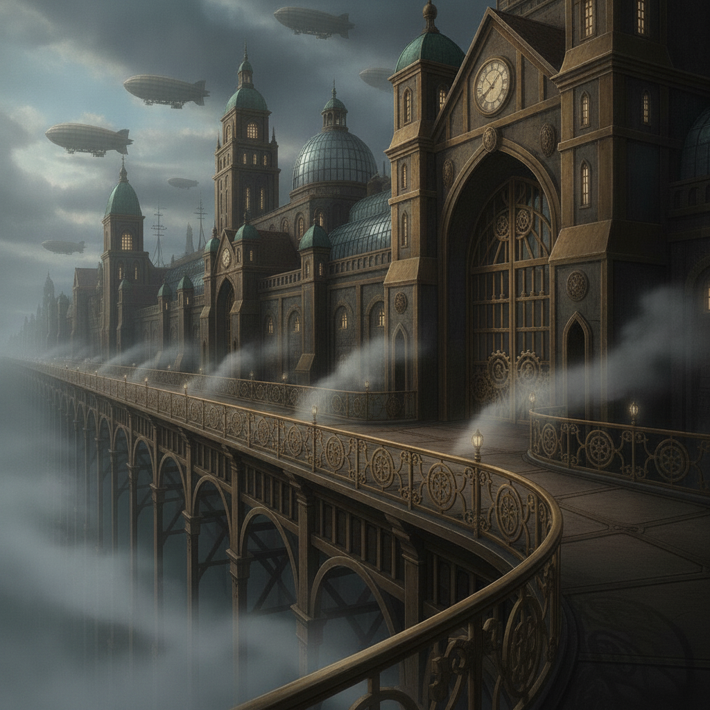

Cinderhold's forge-fires. The grey keeps of Vorn. The cloud-terraces of Halcyon Reach. The soot-warrens beneath Cograuncy. Four corners of one world, stitched together by the Weave — and by the licences that leash it.
THE UNGOVERNED
This is the story of Caedon Vale — a furnace-town boy who could hold both Currents at once — and of the four he was never meant to have to choose between.
It begins, as these things do, at a set of gates — with a boy, a battered trunk, and a choice he does not yet know he is making.